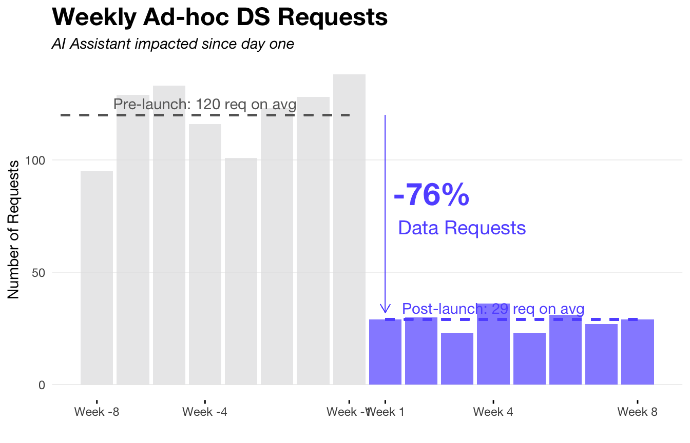
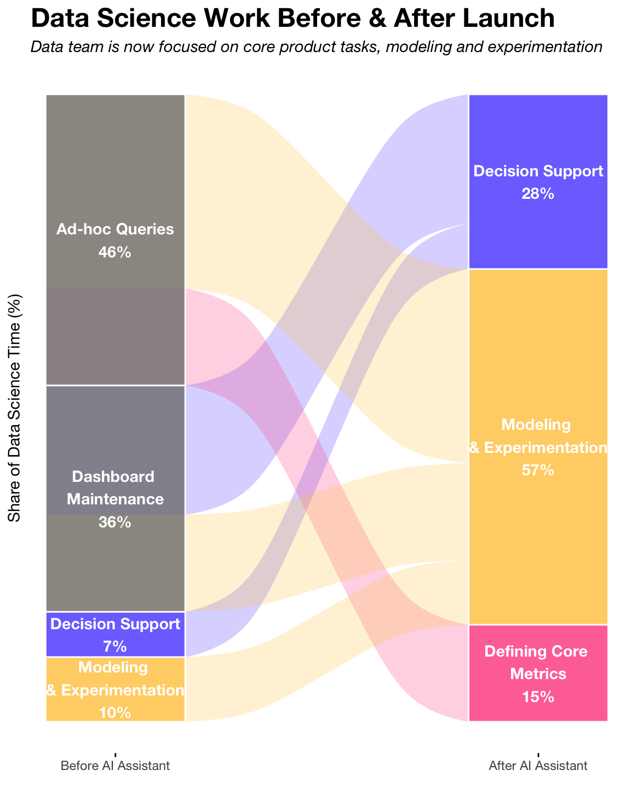
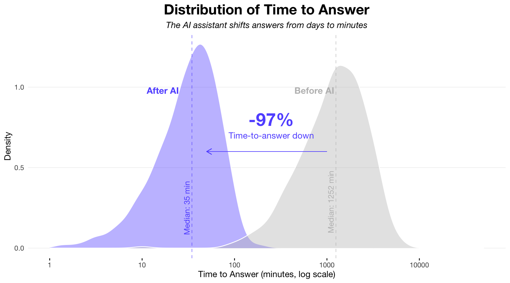
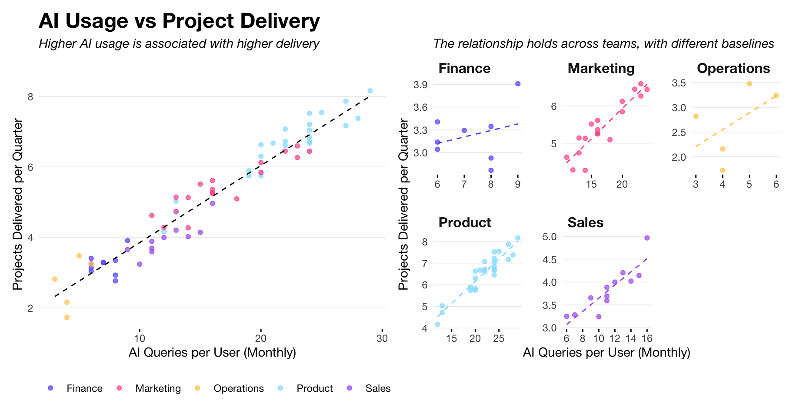
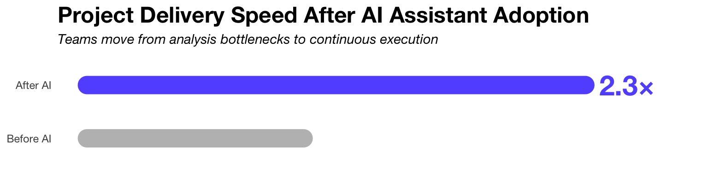

The new AI assistant was launched company-wide eight weeks ago, designed to accelerate insights, reduce repetitive work, and improve decision-making across departments.
As the organization scaled, access to data increasingly relied on dashboards that aged quickly and on ad-hoc requests to the Data team that created operational bottlenecks. To address this, the company launched an AI assistant designed to enable natural-language querying of core datasets, with the explicit objective of accelerating access to insights while reducing dependency on manual analyst intervention.
Eight weeks after launch, the assistant transformed how data is consumed across the organization, from a request-driven model to a more distributed and on-demand one. Answers are now delivered in minutes rather than days and the scale it enables expose ambiguities in business logic. In this sense, the assistant has become both an accelerator and a diagnostic of the organization’s data maturity.
New AI Assistant Exceeded Expectations
Key results in the first eight weeks after launch
-76%
Ad-hoc Data Requests
Most recurring analytical questions are now resolved without direct DS intervention.
-97%
Median Time to Answer
Time-to-insight for common questions compressed from days to minutes.
2.3x
Faster Project Delivery
Teams using the AI assistant consistently ship projects more than twice as fast.
Fewer Requests, Better Work
A ~76% reduction is sustained week over week
The weekly volume of ad-hoc requests to the Data Science team dropped from an average of 120 requests per week pre-launch to 29 post-launch, a reduction of -76%. More importantly, post-launch variability is low: weekly requests range narrowly between 67 and 72, compared to a wider pre-launch range of 117 to 123. There is no rebound effect observed over the eight post-launch weeks, suggesting the reduction is not driven by novelty or temporary behavior change.
The assistant has permanently absorbed a large share of low-complexity demand. This is not deferred work returning through another channel; it is work that no longer needs to exist. The remaining DS requests are structurally different, not just fewer.
Data Scientists Work Has Evolved
From repetitive work to core product support
Since the launch of the AI assistant, the role of the Data Science team has shifted materially from request-driven execution to leverage-focused work.
Routine ad-hoc queries and dashboard maintenance, which previously consumed a large share of analyst time (~90%), are now largely absorbed thanks to self-service access. This has reduced interruptions and enabled the team to concentrate on defining core metrics, building models, supporting experimentation, and partnering more closely with the business on decisions.
Rather than acting as an intermediary that resolves ambiguity on a per-request basis, Data Science increasingly invests in reusable definitions and systems that scale across teams. The net effect is not just faster answers, but a compounding increase in the impact and durability of Data Science work.

Speed Is the Real Breakthrough
75% of queries are solved in under one hour
Pre-launch, time to answer through the DS team shows a heavy-tailed distribution with a median of ~1,252 minutes (~20 hours) and a long right tail extending into multiple days. Post-launch, the assistant compresses the distribution sharply: the median drops to ~35 minutes, with over 75% of queries answered in under one hour. The overlap between the two distributions is minimal, even on a log scale.

This is not an incremental efficiency gain. The assistant removes an entire order of magnitude from the response time distribution. As a result, data is no longer consumed in scheduled review cycles but increasingly in real-time decision contexts.
AI Usage Leads To Higher Throughput
Teams using the AI assistant deliver more projects
Across the organization, AI usage is strongly correlated with delivery throughput. Quantitatively, every additional 10 AI queries per user per month is associated with ~1.6 additional projects delivered per quarter, controlling for department. Teams in the top quartile of AI usage deliver 2.1× more projects than low-usage teams. Product and Marketing show the highest absolute throughput, but the positive slope is consistent across all functions, including lower-usage teams such as Finance and Operations.

Crucially, this relationship reflects productivity gains, not just speed or convenience. Users are able to validate assumptions independently, unblock themselves earlier, and reduce back-and-forth with Data Science. The assistant shifts effort from coordination and clarification toward execution. As a result, work moves forward continuously instead of batching around analyst availability.
Teams Are Not Just Delivering More, But Also Faster
Teams using the AI assistant regularly deliver projects 2.3× faster than before launch, driven by shorter analysis cycles, fewer clarification loops, and earlier detection of data issues. Importantly, this acceleration compounds with usage: teams that integrate the assistant into weekly workflows see sustained gains, while sporadic users plateau quickly.

The assistant does not merely make teams faster at the same work, it changes the shape of delivery. Projects move with fewer handoffs, decisions are made earlier, and Data Science capacity is applied where it has the highest leverage. Productivity gains are therefore structural, not temporary, and scale with both adoption and semantic maturity.
What’s Next?
1
Harden the Semantic Layer as a Key Asset
The productivity gains observed are contingent on consistent definitions. Invest in canonical metrics, versioned logic, and ownership to prevent fragmentation as usage scales.
2
Actively Enable Low-Adoption Teams
Finance and Operations show clear upside but lag in usage. Target these teams with practical examples, templates, and guided workflows tied to real delivery outcomes.
3
Establish a Feedback Loop on Delivery
Use high-impact queries and delivery blockers to continuously refine prompts, defaults, and semantic coverage. The assistant should evolve with how teams actually ship work.
Conclusions
Before the launch, data access was slow, centralized, and mediated through the Data Science team, which masked inconsistencies and absorbed ambiguity at the cost of speed and scalability. After the launch, access is faster, more distributed, and increasingly self-service, but also less forgiving of unclear definitions. The AI assistant has reduced operational load and accelerated decision cycles while simultaneously exposing the organization’s weakest data foundations. In effect, it has shifted the limiting factor from analyst capacity to semantic clarity.